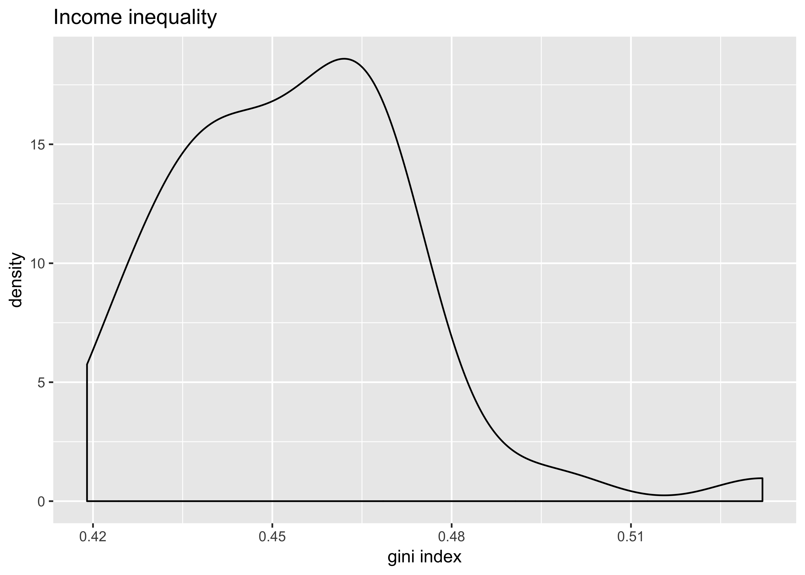
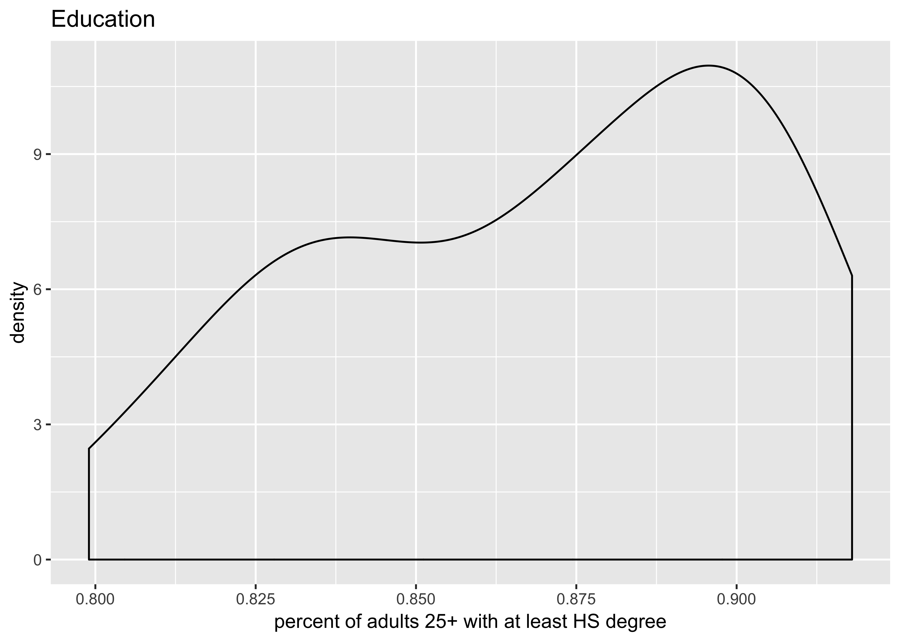
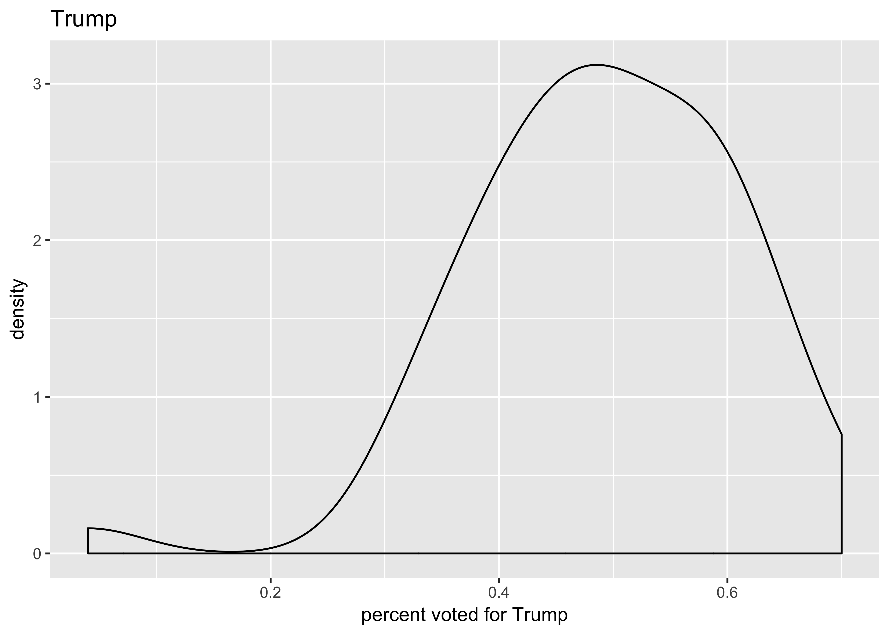
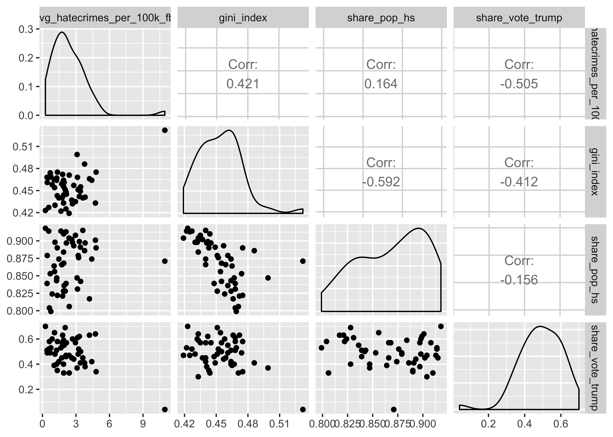
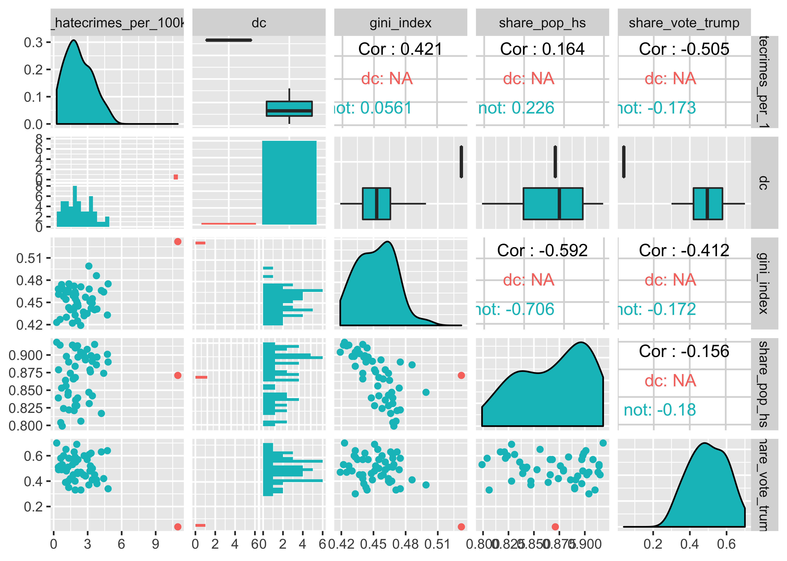
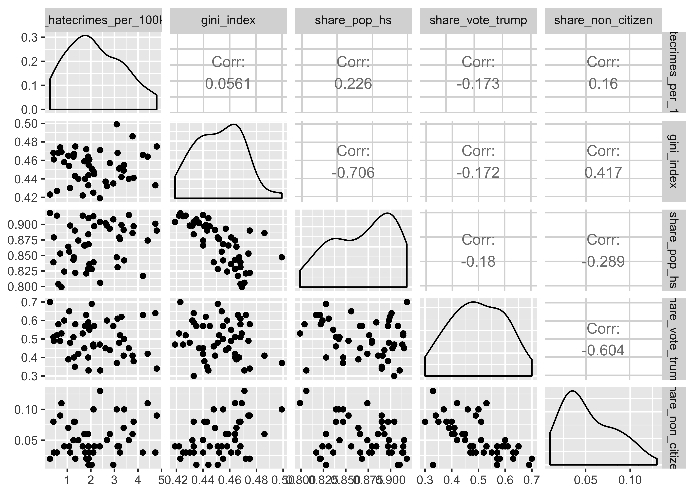

CONJ620: CM 2.4
Multiple linear regression
Alison Hill, Chester Ismay, Albert Y. Kim
7/26/2018
1 Logistics
- A complete knitted
htmlfile is due on Sakai by beginning of class Tuesday July 31th (2:30pm). - This lab is structured to be similar to this Case Study on Seattle House Prices from ModernDive. Please open it and follow along with both datasets!
2 Overview
We’ll work with data from this 538 article. From the article:
We collected data on key socioeconomic factors for each state, including indicators for:
- education (percent of adults 25 and older with at least a high school degree, as of 2009),
- diversity
- percent nonwhite population, 2015
- percent noncitizen population, 2015,
- geographic heterogeneity (percent population in metropolitan areas, 2015),
- economic health
- median household income,
- 2016 seasonally adjusted unemployment (September 2016),
- percent poverty among white people. 2015, and
- income inequality as measured by the Gini index, 2015)
- percent of the population voted for Donald Trump.
In this lab, we’ll use a subset of these variables to predict hate crimes in the US.
3 The Data
This data is included in the fivethirtyeight package in the hate_crimes data frame, which we’ll refer to as the “Hate crimes” dataset. You can use ?hate_crimes to read more about it and the variables.
You’ll need to load these packages to do this lab:
library(fivethirtyeight)
library(skimr)
library(tidyverse)
library(GGally)The data is here:
glimpse(hate_crimes)Observations: 51
Variables: 12
$ state <chr> "Alabama", "Alaska", "Arizona", "A...
$ median_house_inc <int> 42278, 67629, 49254, 44922, 60487,...
$ share_unemp_seas <dbl> 0.060, 0.064, 0.063, 0.052, 0.059,...
$ share_pop_metro <dbl> 0.64, 0.63, 0.90, 0.69, 0.97, 0.80...
$ share_pop_hs <dbl> 0.821, 0.914, 0.842, 0.824, 0.806,...
$ share_non_citizen <dbl> 0.02, 0.04, 0.10, 0.04, 0.13, 0.06...
$ share_white_poverty <dbl> 0.12, 0.06, 0.09, 0.12, 0.09, 0.07...
$ gini_index <dbl> 0.472, 0.422, 0.455, 0.458, 0.471,...
$ share_non_white <dbl> 0.35, 0.42, 0.49, 0.26, 0.61, 0.31...
$ share_vote_trump <dbl> 0.63, 0.53, 0.50, 0.60, 0.33, 0.44...
$ hate_crimes_per_100k_splc <dbl> 0.12583893, 0.14374012, 0.22531995...
$ avg_hatecrimes_per_100k_fbi <dbl> 1.8064105, 1.6567001, 3.4139280, 0...4 Alison editorializing here…
There are two possible outcome variables here:
- pre-election data from the FBI and
- post-election data from the SPLC
- The outcome variable, \(y\), the average annual hate crimes per 100,000 population, FBI, 2010-2015 (
avg_hatecrimes_per_100k_fbi) - The outcome variable, \(y\), hate crimes per 100,000 population, Southern Poverty Law Center, Nov. 9-18, 2016 (
hate_crimes_per_100k_splc)
Proposal: focus on building pre-election model, then perhaps compare coefficients to post-election model on their own?
In the article, they claim that two variables remained significant in both model outputs: income inequality and percent population with a high school degree. The three explanatory/predictor variables we’ll use are:
gini_index(income inequality)share_pop_hsshare_vote_trump(make categorical?)
5 Univariate EDA
will flush out more if use this dataset
skim(hate_crimes)Skim summary statistics
n obs: 51
n variables: 12
Variable type: character
variable missing complete n min max empty n_unique
state 0 51 51 4 20 0 51
Variable type: integer
variable missing complete n mean sd p0 p25 p50
median_house_inc 0 51 51 55223.61 9208.48 35521 48657 54916
p75 p100 hist
60719 76165 ▂▅▆▇▇▃▃▂
Variable type: numeric
variable missing complete n mean sd p0 p25
avg_hatecrimes_per_100k_fbi 1 50 51 2.37 1.71 0.27 1.29
gini_index 0 51 51 0.45 0.021 0.42 0.44
hate_crimes_per_100k_splc 4 47 51 0.3 0.25 0.067 0.14
share_non_citizen 3 48 51 0.055 0.031 0.01 0.03
share_non_white 0 51 51 0.32 0.16 0.06 0.2
share_pop_hs 0 51 51 0.87 0.034 0.8 0.84
share_pop_metro 0 51 51 0.75 0.18 0.31 0.63
share_unemp_seas 0 51 51 0.05 0.011 0.028 0.042
share_vote_trump 0 51 51 0.49 0.12 0.04 0.41
share_white_poverty 0 51 51 0.092 0.025 0.04 0.075
p50 p75 p100 hist
1.99 3.18 10.95 ▇▇▅▁▁▁▁▁
0.45 0.47 0.53 ▅▅▇▇▁▁▁▁
0.23 0.36 1.52 ▇▃▁▁▁▁▁▁
0.045 0.08 0.13 ▃▇▂▃▂▂▂▁
0.28 0.42 0.81 ▆▇▆▇▅▂▁▁
0.87 0.9 0.92 ▂▅▅▃▃▅▇▆
0.79 0.9 1 ▂▁▃▅▂▇▆▇
0.051 0.058 0.073 ▂▅▇▃▇▆▃▂
0.49 0.57 0.7 ▁▁▁▃▇▇▆▃
0.09 0.1 0.17 ▁▅▃▇▃▁▁▁# Histogram of gini index:
ggplot(hate_crimes, aes(x = gini_index)) +
geom_density() +
labs(x = "gini index", title = "Income inequality")
# Histogram of share pop hs:
ggplot(hate_crimes, aes(x = share_pop_hs)) +
geom_density() +
labs(x = "percent of adults 25+ with at least HS degree", title = "Education")
# Histogram of turmp:
ggplot(hate_crimes, aes(x = share_vote_trump)) +
geom_density() +
labs(x = "percent voted for Trump", title = "Trump")
6 Bivariate EDA
Let’s look at all 3 of these predictors of the pre-election hate crimes:
hate_crimes %>%
select(avg_hatecrimes_per_100k_fbi,
gini_index, share_pop_hs, share_vote_trump) %>%
ggpairs(.)
OK, one point appears to be an outlier. I’m going to color by DC so you can see this:
hate_crimes %>%
mutate(dc = ifelse(state == "District of Columbia", "dc", "not")) %>%
select(avg_hatecrimes_per_100k_fbi, dc,
gini_index, share_pop_hs, share_vote_trump) %>%
ggpairs(., mapping = aes(color = dc))
This is where Alison goes off track to figure this out…
hate_crimes %>%
filter(!state == "District of Columbia") %>%
select(avg_hatecrimes_per_100k_fbi,
gini_index, share_pop_hs, share_vote_trump, share_non_citizen) %>%
ggpairs(.)
Question: should we exclude District of Columbia here? I think so- it appears to have multivariate weirdness.
hate_crimes %>%
filter(state == "District of Columbia")# A tibble: 1 x 12
state median_house_inc share_unemp_seas share_pop_metro share_pop_hs
<chr> <int> <dbl> <dbl> <dbl>
1 Dist… 68277 0.067 1 0.871
# ... with 7 more variables: share_non_citizen <dbl>,
# share_white_poverty <dbl>, gini_index <dbl>, share_non_white <dbl>,
# share_vote_trump <dbl>, hate_crimes_per_100k_splc <dbl>,
# avg_hatecrimes_per_100k_fbi <dbl>Here is me excluding it (and making categorical versions at the same time:
hate_states <- hate_crimes %>%
filter(!state == "District of Columbia") %>%
mutate(
cat_pop_hs = case_when(
share_pop_hs < .85 ~ 0, #low
between(share_pop_hs, .85, .89) ~ 1, #medium
TRUE ~ 2 #high
),
cat_non_citizen = case_when(
share_non_citizen <= .05 ~ 0, #low
TRUE ~ 1 #high
),
cat_trump = case_when(
share_vote_trump < .5 ~ "low",
TRUE ~ "high"
))7 Multiple regression models
So one group could do this…
hate_model <- lm(avg_hatecrimes_per_100k_fbi ~
gini_index +
share_pop_hs,
data = hate_states)
summary(hate_model)
Call:
lm(formula = avg_hatecrimes_per_100k_fbi ~ gini_index + share_pop_hs,
data = hate_states)
Residuals:
Min 1Q Median 3Q Max
-2.19014 -0.79311 -0.03152 0.81289 2.56505
Coefficients:
Estimate Std. Error t value Pr(>|t|)
(Intercept) -26.225 10.684 -2.455 0.01795 *
gini_index 28.159 12.853 2.191 0.03356 *
share_pop_hs 18.049 6.649 2.714 0.00931 **
---
Signif. codes: 0 '***' 0.001 '**' 0.01 '*' 0.05 '.' 0.1 ' ' 1
Residual standard error: 1.133 on 46 degrees of freedom
(1 observation deleted due to missingness)
Multiple R-squared: 0.1408, Adjusted R-squared: 0.1034
F-statistic: 3.768 on 2 and 46 DF, p-value: 0.03051Then maybe group 2:
hate_model2 <- lm(avg_hatecrimes_per_100k_fbi ~
gini_index +
share_pop_hs +
share_vote_trump,
data = hate_states)
summary(hate_model2)
Call:
lm(formula = avg_hatecrimes_per_100k_fbi ~ gini_index + share_pop_hs +
share_vote_trump, data = hate_states)
Residuals:
Min 1Q Median 3Q Max
-2.18901 -0.79297 -0.03008 0.80592 2.56791
Coefficients:
Estimate Std. Error t value Pr(>|t|)
(Intercept) -26.10852 12.82977 -2.035 0.0478 *
gini_index 28.04377 14.69043 1.909 0.0627 .
share_pop_hs 17.99349 7.47966 2.406 0.0203 *
share_vote_trump -0.03265 1.93564 -0.017 0.9866
---
Signif. codes: 0 '***' 0.001 '**' 0.01 '*' 0.05 '.' 0.1 ' ' 1
Residual standard error: 1.146 on 45 degrees of freedom
(1 observation deleted due to missingness)
Multiple R-squared: 0.1408, Adjusted R-squared: 0.0835
F-statistic: 2.458 on 3 and 45 DF, p-value: 0.07508Then maybe group 3:
hate_model3 <- lm(avg_hatecrimes_per_100k_fbi ~
gini_index +
share_pop_hs +
cat_trump,
data = hate_states)
summary(hate_model3)
Call:
lm(formula = avg_hatecrimes_per_100k_fbi ~ gini_index + share_pop_hs +
cat_trump, data = hate_states)
Residuals:
Min 1Q Median 3Q Max
-2.18473 -0.79379 -0.03785 0.82822 2.56073
Coefficients:
Estimate Std. Error t value Pr(>|t|)
(Intercept) -26.50400 12.05860 -2.198 0.0331 *
gini_index 28.45705 14.19969 2.004 0.0511 .
share_pop_hs 18.22542 7.53183 2.420 0.0196 *
cat_trumplow -0.01919 0.36907 -0.052 0.9588
---
Signif. codes: 0 '***' 0.001 '**' 0.01 '*' 0.05 '.' 0.1 ' ' 1
Residual standard error: 1.146 on 45 degrees of freedom
(1 observation deleted due to missingness)
Multiple R-squared: 0.1408, Adjusted R-squared: 0.08355
F-statistic: 2.459 on 3 and 45 DF, p-value: 0.075Then maybe group 4 (tricky! need to talk about factors :):
hate_model4 <- lm(avg_hatecrimes_per_100k_fbi ~
gini_index +
as.factor(cat_pop_hs),
data = hate_states)
summary(hate_model4)
Call:
lm(formula = avg_hatecrimes_per_100k_fbi ~ gini_index + as.factor(cat_pop_hs),
data = hate_states)
Residuals:
Min 1Q Median 3Q Max
-2.00476 -0.80254 0.03371 0.62569 2.33648
Coefficients:
Estimate Std. Error t value Pr(>|t|)
(Intercept) -12.1426 6.5428 -1.856 0.0700 .
gini_index 30.1624 14.0239 2.151 0.0369 *
as.factor(cat_pop_hs)1 0.5485 0.4293 1.278 0.2079
as.factor(cat_pop_hs)2 1.4869 0.5856 2.539 0.0146 *
---
Signif. codes: 0 '***' 0.001 '**' 0.01 '*' 0.05 '.' 0.1 ' ' 1
Residual standard error: 1.154 on 45 degrees of freedom
(1 observation deleted due to missingness)
Multiple R-squared: 0.1283, Adjusted R-squared: 0.07013
F-statistic: 2.207 on 3 and 45 DF, p-value: 0.1003